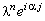
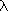
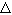

|
Рассмотрим неявную разностную схему, аппроксимирующую дифференциальное уравнение (3.3):
Можно доказать, что разностная схема для погрешности решения в этом случае
(как и в случае явной разностной схемы), по структуре совпадает с неявной разностной схемой
для однородного уравнения параболического типа. Поэтому для исследования устойчивости
неявной разностной схемы отбрасываем свободный член и представляем решение в виде
гармоники (3.7) (по аналогии с тем, как это было сделано для явной разностной схемы):
Далее, упрощаем полученное выражение, деля левую и правую его части на :
Используя зависимости (3.9), (3.10), получаем формулу, из которой затем выражаем :
Легко видеть, что необходимое условие устойчивости разностных схем (3.8)
в данном случае выполняется при любых значениях t и h. Такие разностные схемы,
устойчивость которых не зависит от выбора интервала деления на разностной сетке,
называют абсолютно устойчивыми.
|